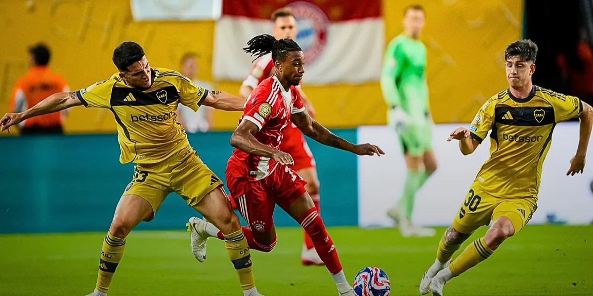
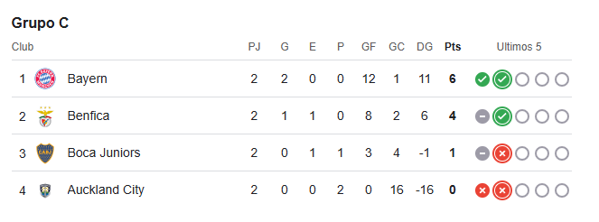

¿Qué necesita Boca para pasar a octavos?
Boca Juniors perdió 2-1 contra Bayern Munich en la segunda fecha de la fase de grupos del Mundial de Clubes y complicó su pase a la siguiente instancia de la competición.
Tras la derrota del Xeneize 2-1 ante el conjunto Bávaro y la goleada 6-0 del Benfica
sobre el Auckland City, comienzan las especulaciones al respecto de qué
resultados podrían beneficiar al equipo de Miguel Ángel Russo de cara a la
clasificación a los octavos de final del Mundial de Clubes.
Lo que debe suceder de forma prácticamente obligatoria es que el Bayern le gane al
conjunto luso y Boca consiga una victoria frente al club que representa a Oceania. La gran variable
está en los goles que pueda haber en el partido entre los compilados europeos: si el
equipo de Vincent Kompany le propicia una goleada a “Las Águilas” colaboraría a la
disminución de la diferencia de gol de Benfica, que actualmente es de 6 tantos, y
esta situación haría que una victoria contundente pero no necesariamente holgada
del equipo de la Ribera lo clasifique a la siguiente ronda.

Otra posibilidad que le daría al conjunto argentino el pase a octavos es que los
alemanes triunfen frente a los portugueses de forma ajustada, por uno o dos goles,
y que, por su parte, el Azul y Oro haga los deberes y le gane al conjunto
neozelandés de forma holgada. En este panorama, Boca precisa de una goleada
estrepitosa, 6 0 7 goles de diferencia, para asegurarse la segunda plaza del grupo.
Además, es necesario tener en consideración que el Fair Play es una de las
cuestiones que se toman en cuenta para desempatar en caso de empate en puntos
y diferencia de gol. En esta arista, la diferencia la hacen las dos rojas que le sacaron
a Boca Juniors en el primer partido, las de Ander Herrera y Nicolás Figal, por
encima de la única que tiene Benfica hasta el momento, la de Belloti también
mostrada en el primer encuentro de la fase de grupos, por lo que en caso de haber
empate de puntos y goles pasarían los portugueses por mejor fair play.
A su vez, si el encuentro entre el Bayern y el Benfica resulta en empate dejarían al
equipo de La Boca sin posibilidades incluso ganando su partido y la perspectiva se
volvería más desoladora para el hincha del Xeneize si los de Bruno Lage vencen a
Los Rojos de Munich.